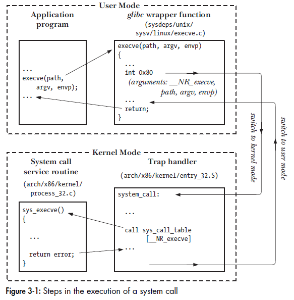

user-space applications must signal to the kernel that they want to execute a system call and have the system switch to kernel mode, where the system call can be executed in kernel-space by the kernel on behalf of the application.
check the manual: man syscalls
Linux system calls: https://github.com/torvalds/linux/blob/master/arch/x86/entry/syscalls/syscall_64.tbl
In Linux, each system call is assigned a syscall number.This is a unique number that is used to reference a specific system call.
The kernel keeps a list of all registered system calls in the system call table, stored in
sys_call_table. on x86-64 it is defined in /usr/include/asm/unistd_64.h.
Syscall Table list: https://filippo.io/linux-syscall-table/
Incur an exception, and the system will switch to kernel mode and execute the exception handler (in this case, called system call handler). The defined software interrupt on x86 is interrupt number 128, which is incurred via the int $0x80 instruction.
entry_64.S.execve() is system call number 11 (__NR_execve). Thus, in the sys_call_table vector, entry 11 contains the address of sys_execve()

use SYSCALL instruction. This provides a faster, more specialized way of trapping into a kernel to execute a system call than using the int interrupt instruction.
As a convention, for the kernel to receive incoming system calls, it must register the address of the code that will execute when a system call occurs by writing its address to the IA32_LSTAR MSR. It is done in arch/x86/kernel/cpu/common.c:
void syscall_init(void)
{
/* ... other code ... */
wrmsrl(MSR_LSTAR, system_call);
Here, the address of a function named system_call is written to as MSR_LSTAR, which is defined as 0xc0000082 in arch/x86/include/uapi/asm/msr-index.h.
the system_call is defined in arch/x86/kernel/entry_64.S. It uses rax to actually hand off execution to a particular system call.
ENTRY(system_call):
...
call *sys_call_table(,%rax,8) # XXX: rip relative
A script runs at kernel compile time and generates the syscalls_64.h file from the table in arch/x86/syscalls/syscall_64.tbl. By including syscalls_64.h , sys_call_table is an array of function pointers index by system call numbers.
// file arch/x86/kernel/syscall_64.c
asmlinkage const sys_call_ptr_t sys_call_table[__NR_syscall_max+1] = {
/*
* Smells like a compiler bug -- it doesn't work
* when the & below is removed.
*/
[0 ... __NR_syscall_max] = &sys_ni_syscall,
#include <asm/syscalls_64.h>
};
SYSRET
The kernel uses the sysret instruction to resume execution back to user who used syscall.
The address to where execution should be resume is copied into the rcx register when syscall is used. As long as you preserve that value somewhere and restore it to rcx before calling sysret, execution will resume where it left off before the call to syscall. Code in arch/x86/kernel/entry_64.S
movq RIP-ARGOFFSET(%rsp),%rcx
CFI_REGISTER rip,rcx
RESTORE_ARGS 1,-ARG_SKIP,0
/*CFI_REGISTER rflags,r11*/
movq PER_CPU_VAR(old_rsp), %rsp
USERGS_SYSRET64 # USERGS_SYSRET64 is a macro defined in arch/x86/include/asm/irqflags.h which contains the sysret instruction.
The system calls for 64 bit Linux are different than for 32 bit, documented in a comment in arch/x86/kernel/entry_64.S.
/usr/include/asm/unistd_64.h .syscall instruction. This instruction saves the return address to rcx, and after that it loads rip from IA32_LSTAR MSR. I.e. rcx is immediately destroyed by syscall. This is the reason why rcx had to be replaced for a system call ABI.syscall instruction also saves rflags into r11, and then masks rflags using IA32_FMASK MSR. This is why r11 isn't saved by the kernel.syscall instruction to execute a system call. (In 32bit, it uses software interrupt instruction to effect the call: int 0x80)In Unix/Linux, every system call is usable via a C wrapper function.
syscall instruction is the preferred way to use the system calls.Often, library functions are designed to provide a more caller-friendly interface than the underlying system call.
perror(const char* msg), stderror(int errnum) can be used to print errors.For many system calls, glic provides library wrapper functions.
For many of them, glibc simply needs a wrapper function where it moves arguments into the proper registers and then executes the syscall instruction or int $0x80 instruction, or calls __kernel_vsyscall.
sysdeps/unix/syscalls.list file describes some common system calls.More complex system calls, like exit which invokes handlers have actual implementations in C or assembly code and will not be found in a templated text file like this.
syscall()However, there are some system calls for which no glibc wrapper exists:
futex(), bpf().We can always gain access to an unsupported system call by way of the syscall() function.
syscall() defined in sysdeps/unix/sysv/linux/x86_64/syscall.S:
/* Usage: long syscall (syscall_number, arg1, arg2, arg3, arg4, arg5, arg6)
We need to do some arg shifting, the syscall_number will be in
rax. */
.text
ENTRY (syscall)
movq %rdi, %rax /* Syscall number -> rax. */
movq %rsi, %rdi /* shift arg1 - arg5. */
movq %rdx, %rsi
movq %rcx, %rdx
movq %r8, %r10
movq %r9, %r8
movq 8(%rsp),%r9 /* arg6 is on the stack. */
syscall /* Do the system call. */
cmpq $-4095, %rax /* Check %rax for error. */
jae SYSCALL_ERROR_LABEL /* Jump to error handler if error. */
L(pseudo_end):
ret /* Return to caller. */
Issues with this approach:
syscall()syscall() difficultLinux virtual Dynamic Shared Object (vDSO) is a set of code that is part of the kernel, but is mapped into the address space of a user program to be run in userland.
vDSO in the kernel
vDSO source in arch/x86/vdso/. Eg, the source for gettimeofday found in arch/x86/vdso/vclock_gettime.c:
int gettimeofday(struct timeval *, struct timezone *)
__attribute__((weak, alias("__vdso_gettimeofday")));
This is defining gettimeofday to be a weak alias for __vdso_gettimeofday.
The __vdso_gettimeofday function in the same file contains the actual source which will be executed in user land when a user program calls the gettimeofday system call.
arch/x86/vdso/vdso.lds.S is the linker scripts that arranges the symbols that are going to be exported in the vDSO.
/*
* This controls what userland symbols we export from the vDSO.
*/
VERSION {
LINUX_2.6 {
global:
clock_gettime;
__vdso_clock_gettime;
gettimeofday;
__vdso_gettimeofday;
getcpu;
__vdso_getcpu;
time;
__vdso_time;
local: *;
};
}
Locating the vDSO in memory
Due to address space layout randomization the vDSO will be loaded at a random address when a program is started.
a user program can search for an ELF auxilliary header of type AT_SYSINFO_EHDR. It will contain the address of the start of the ELF header for the vDSO that was generated by a linker script.
Once that header is located, user programs can parse the ELF object (perhaps using libelf) and call the functions in the ELF object as needed.
An example of parsing and calling functions in the vDSO is provided in the kernel documentation in Documentation/vDSO/.
vDSO in glibc
Most of the time, people access the vDSO without knowing it because glibc abstracts this away.
When a program is loaded, the dynamic linker and loader loads the DSOs that the program depends on, including the vDSO. glibc stores some data about the location of the vDSO when it parses the ELF headers of the program that is being loaded. It also includes short stub functions that will search the vDSO for a symbol name prior to making an actual system call.
For example, the gettimeofday function in glibc, from sysdeps/unix/sysv/linux/x86_64/gettimeofday.c:
void *gettimeofday_ifunc (void) __asm__ ("__gettimeofday");
void *
gettimeofday_ifunc (void)
{
PREPARE_VERSION (linux26, "LINUX_2.6", 61765110);
/* If the vDSO is not available we fall back on the old vsyscall. */
return (_dl_vdso_vsym ("gettimeofday", &linux26)
?: (void *) VSYSCALL_ADDR_vgettimeofday);
}
__asm (".type __gettimeofday, %gnu_indirect_function");
This code in glibc searches the vDSO for the gettimeofday function and returns the address. This is wrapped up nicely with an GNU indirect function. That’s how programs calling gettimeofday pass through glibc and hit the vDSO all without switching into kernel mode, incurring a privilege level change, or raising a software interrupt.
SYSCALL_DEFINE0(getpid)
{
return task_tgid_vnr(current); // returns current->tgid
}
SYSCALL_DEFINE0 is simply a macro that defines a system call with no parameters (hence the 0).The expanded code looks like this:
asmlinkage long sys_getpid(void)
sys_getpid is the name convention for Linux system call: sys_foo()System call must verify parameters are valid, legal and correct.
One of the most important checks is the validity of any pointers:
During the execution of a system call.The current pointer points to the current task, which is the process that issued the syscall.
In process context, the kernel is capable of sleeping (for example, if the system call blocks on a call or explicitly calls schedule()) and is fully preemptible. The fact that process context is preemptible implies that, like user-space, the current task may be preempted by another task. Because the new task may then execute the same system call, care must be exercised to ensure that system calls are reentrant.
entry.S. Append an new entry like .long sys_foo#define __NR_foo 338kernel/sys.c, which is home to miscellaneous system calls.Linux provides a set of macros for wrapping access to system calls. It sets
up the register contents and issues the trap instructions.These macros are named
_syscalln(), where n is between 0 and 6.The number corresponds to the number of
parameters passed into the syscall
The _syscalln() macro expands into a C
function with inline assembly; the assembly performs the steps discussed in the previous
section to push the system call number and parameters into the correct registers and issue the software interrupt to trap into the kernel. Placing this macro in an application is all
that is required to use the open() system call.
Example:
#define __NR_foo 283
__syscall0(long, foo)
int main ()
{
long stack_size;
stack_size = foo ();
printf (“The kernel stack size is %ld\n”, stack_size);
return 0;
}